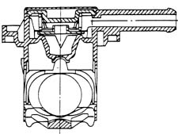
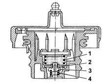
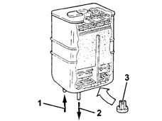
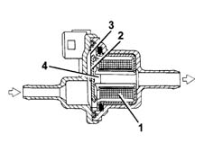

SPECIFICATIONS
- Path
- Descriptions > 10 ENGINE > 1080 EMISSION CONTROL SYSTEM > 1080E EVAPORATION CONTROL SYSTEM > SPECIFICATIONS
- Kind
- system description
- Applies to
- engines: 3.0 V6, 3.2 V6; all production periods
- Interactive page
- https://sloeber94.github.io/elrnDB-lThss/en/#/616686
Applies to: engines: 3.0 V6, 3.2 V6; all production periods
FUNCTION
Vapours from the tank flow through two multifunction valves and are directed to the separator.
The vapours condense in the separator and drop into the tank.
Uncondensed vapours are directed through the pipe to the canister, where they are absorbed and stored by the activated carbon.
The vapours flow to the intake chamber through a solenoid controlled by the injection control unit.
Multifunction valves
Multifunction valve functions are as follows:
- tank pressurisation.
- fastening.
- seal in the case of roll-over.
The multifunction valves are heat-welded to the fuel tank and cannot therefore be replaced individually.

Tank pressurization.
Tank pressure is maintained at 30 - 45 bars using a fluorosilicone rubber valve resting on a sealing edge.
The valve is supported by a stainless steel plate and held in place by a spring.
When tank pressure exceeds a set level, it overcomes spring resistance and allows the valve to rise so that fuel can flow out toward the canister.
The valve re-closes when the pressure returns to within specified limits.
Retainer.
Under specific vehicle operating conditions, a vacuum develops in the tank due to:
- heat fluctuations.
- fuel consumption.
In this case, the valve's function is to restore pressure in the tank by admitting air.
A fault in this function may lead to juddering or stalling because not enough fuel can reach the pump.
This function is performced by the goosebill valve formed directly out of the fluorosilicone seal.
Seal in the case of roll over.
The roll-over function prevents fuel emerging from the tank if the vehicle rolls over or tilts too far to one side.
During normal vehicle operation (cornering, acceleration, braking etc.), the fuel may slop over into the canister.
The high rollover sensitivity prevents this slop-over from occurring.
The roll-over closure angle is 33°.
Safety and ventilation valve
This valve is built into the fuel filler cap and performs as follows, depending on fuel pressure in the tank.
Excess pressure in tank.
When tank pressure exceeds the specified value, it acts on plate (2) and overcomes the load on spring (1) so that excess vapours can be vented outside.
Vacuum in reservoir.
When excess pressure builds up in the tank due to fuel consumption, this overcomes the load on spring (4) and moves valve (3) to admit air.

Canister
This is fitted to the right front wheel arch and consists of an activated carbon filter element that absorbs fuel vapours from the separator.
A one-way valve admits outside air (flushing air) during vapour intake.

- 1, From multifunction valve.
- 2, To solenoid.
- 3, One-way flushing valve (not on EURO 3 version).
Fuel Vapour Solenoid Valve.
This is fitted on the lower part of the modular intake manifold and is controlled by the injection control unit.
The solenoid allows fuel vapours stored in the canister to flow through to the engine intake.
If deactivated, the solenoid remains in open position. At key-ON, it closes ready for operation.
Electromagnet (1) is excited and attracts plunger (2) that overcomes the load of spring pack (3) to close orifice (4) and prevent fuel vapours from passing through.
